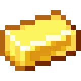

EarthCube fonctionne avec plusieurs plugins qui permettent notaments de posséder du terrain en temps que faction (Faction), de devenir meilleur en minage, argriculture ou encore combats en s'entrainant (mcMMO), de colecter des kits (Kit), d'obtenir des récompenses en votant (Vote) ou encore de détecter les cheaters.
Cette page référence toutes les choses a savoir sur ses différents plugins.
Mcmmo vous permet de devenir plus performant dans certaines taches,
en fonction de votre entrainement.
Si vous minez beacoup, vous pouvez gagner plus de minerais en en minants,
et vous débloquez une capacité de minage rapide.
Il existe des compétences utiles pour :
Toutes ses compétences sont décrites en détails sur la page officielle de McMMO.
/kit
Des kits sont disponible en jeu, certains sont gratuits, d'autres peuvent être obtenu via la boutique.
Le plugins de faction permet aux joueurs de ce regrouper en faction afin
de protéger leur territoire et d'attaquer celui des voisins.
Vous pouvez ou bien créer votre propre faction, ou bien rejoindre une faction existante.
Chaque faction a un territoire plus ou moins grand qui est partiellement protégé des autres factions.
Les blocs du territoire d'une faction ne peuvent pas être détruit facilement
et les coffres & portes ne sont pas ouvrable.
Les explosions des TNTs et du wither boss sont activé dans les claims des autres factions !
Le PvP est actif partout sur la carte et dans tous les mondes, a l'exeption des territoires de factions.
Le PvP peut être activé dans les territoires de factions en changeant le status de l'autre faction a enemis.
Toutes les actions de faction qui coute de l' nécésite d'avoir de l' dans la banque de faction.
/f create [nom de faction] Crée une faction avec pour nom [nom de faction](coute 64 )/f join [nom de faction] Fait rejoindre la faction [nom de faction] si elle est ouverte ou que vous y avez été invité./f promote Monte en grade un joueur de votre faction./f demote Décend en grade un joueur de votre faction./f who [Nom de faction] Montre les informations d'une faction./f claim pour claim votre territoire. (coute 16 + 1 par claim existant)/f unclaim pour enlever un territoire (fait regagner une parti du coup d'achat)/f map pour voir les territoires de faction autour de vous./f enemy [Nom de faction] pour passer le status de la faction a enemie./f neutral [Nom de faction] pour passer le status de la faction a neutre. Si la faction vous a mis dans sa liste d'enemis, cette commande n'aura pas d'effet./f ally [Nom de faction] pour passer le status de la faction a ally. Les 2 factions doivent faire la commandes/f sethome défini le point d'apparition (home) de votre faction a votre position/f home pour se tp a votre home de faction /f ban ban un membre de votre faction /f unban pour révoquer le ban /f kick kick un membre de votre faction /f list voir toutes les factions /f chest votre coffre de faction (virtuel) /f chat [status] Parler avec [Faction|Ally|Public] /f updates le menu d'amélioration /f tag [nom de faction] Changer [nom de faction]/f title Mettre un titre a un membre de votre faction/f desc Définir la description de faction/f open ouvrir ou fermer la faction a tout les joueurs1€ = 1
/bal [joueur] Affiche l'argent de [joueur]/baltop Affiche le classement d'argent des joueurs/sell all Transformer tout son en main en monnaie virtuelle/sell inventory [quantité] Transforme [quantité] d' dans l'inventaire en monnaie virtuelle/pay [joueur] [quantité] Transfère [quantité] de monnaie virtuelle vers [joueur]/f bank b Affiche l' de votre faction/f bank d [quantité] Transfère [quantité] de monnaie virtuelle de vous vers votre faction/f bank w [quantité] Transfère [quantité] de monnaie virtuelle de votre faction vers vous